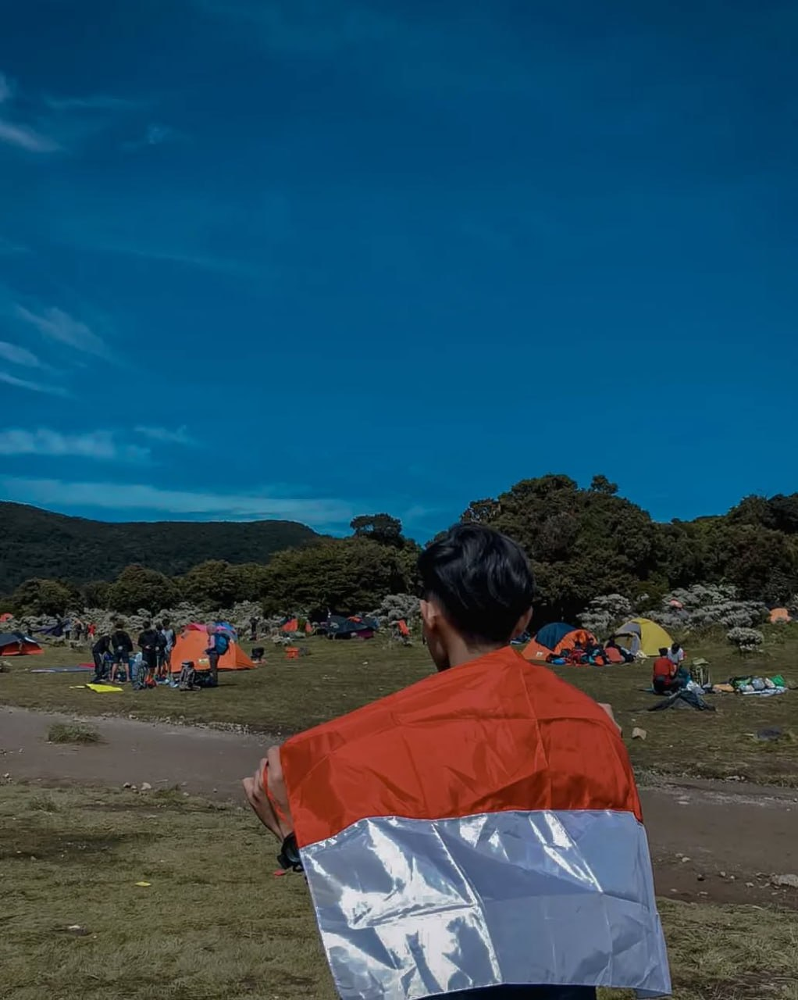
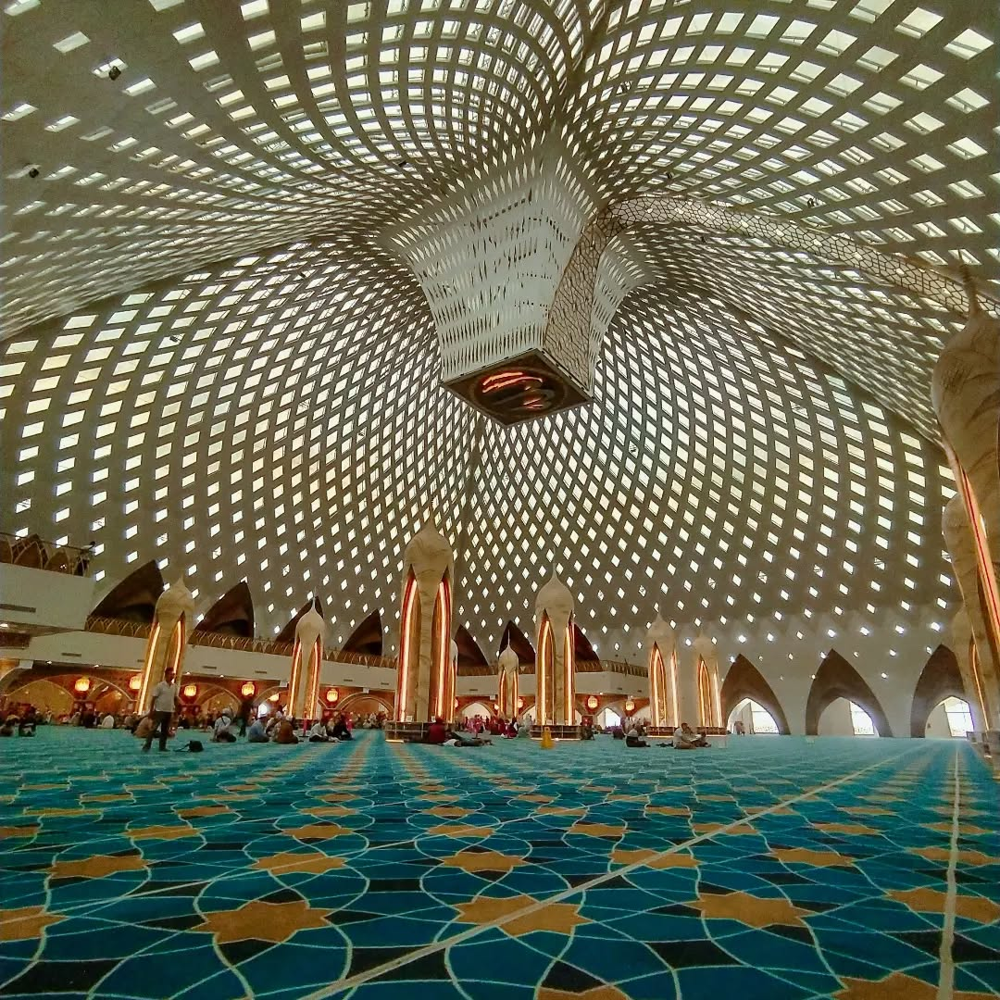
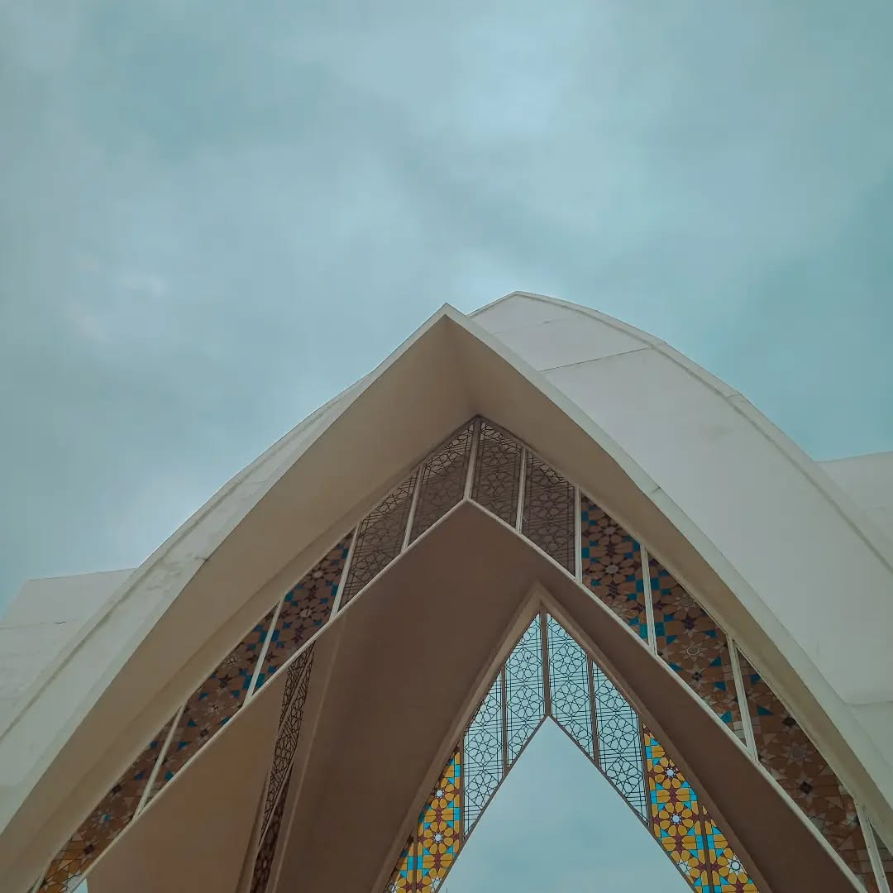
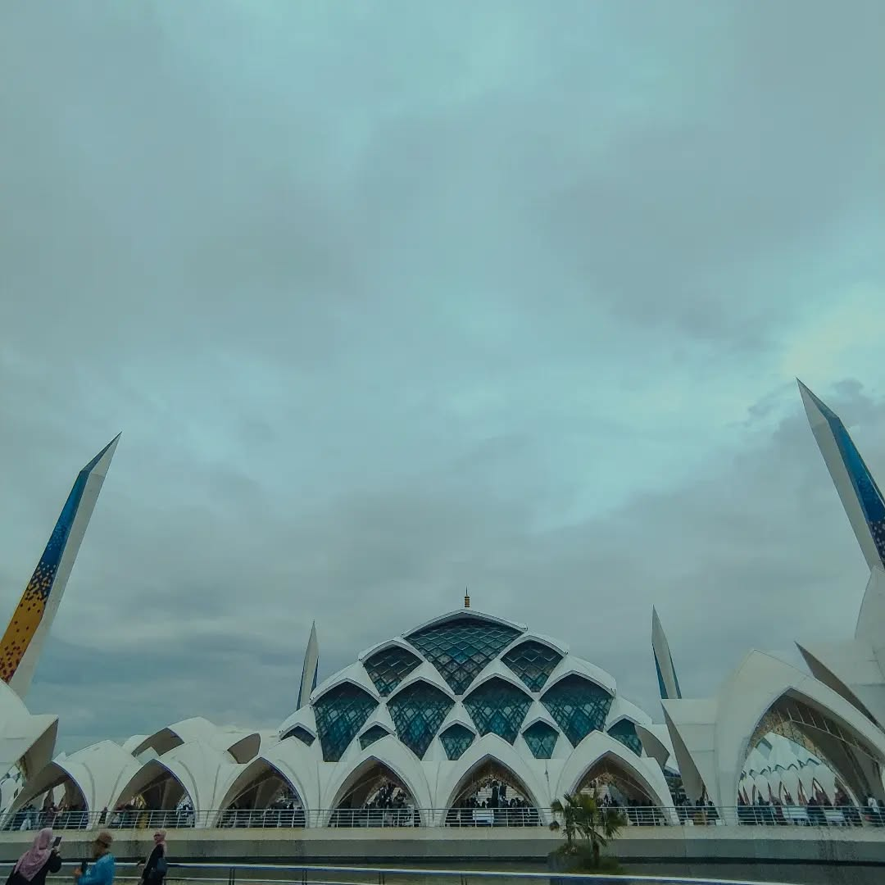
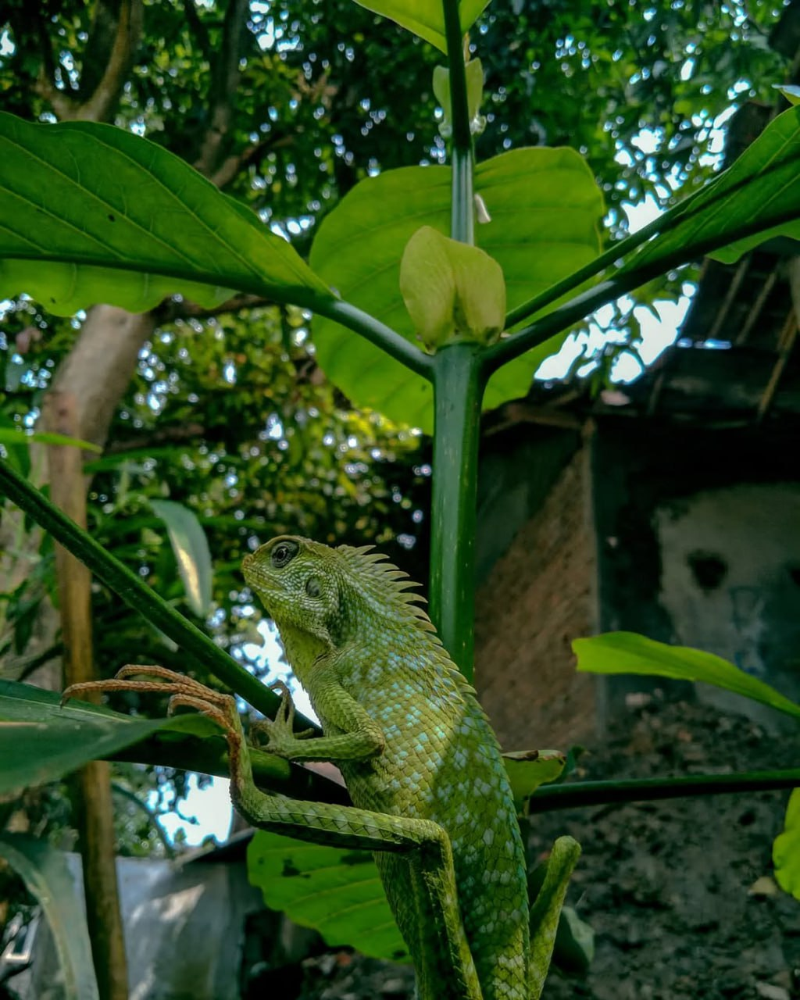
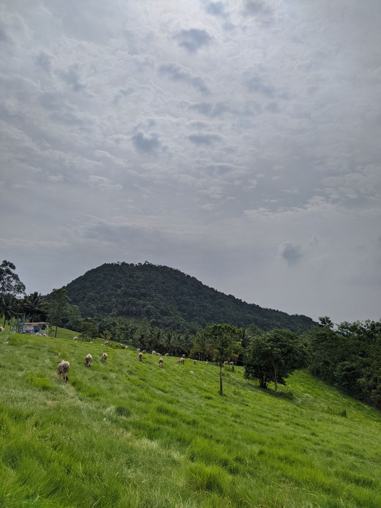

Genta Jaya Clothes Shop
Videografer dan Editor
TRIASTARA PROJEK
Sutradara, Videografer, Editor
Alun-alun Rangkasbitung
Sutradara, Videografer, Editor
Sekolah MAN
Videografer, Editor
Pantai Binuangen
Videografer, Editor

Golden Rasio • Gunung Gede
Fotografi & Color grading

Potret puncak • Gunung Gede
Fotografi & Color grading

Potret puncak • Gunung Gede
Fotografi & Color grading

Art Interior • Masjid Al-Jabbar
Fotografi & Color grading

Art Ornamen • Masjid Al-Jabbar
Fotografi & Color grading

Art Bangunan • Masjid Al-Jabbar
Fotografi & Color grading

Potret suasana jalanan • Jalan Braga
Fotografi & Color grading

Pemandangan Rel Stasiun • Bandung
Fotografi & Color grading

Potret Lampu di Stasiun Bandung • Bandung
Fotografi & Color grading

Sinematik foto • Lebak
Fotografi & Color grading

Reptile Bunglon • Belakang Rumah
Fotografi & Color grading

Pemandangan Bukit Waruwangi • Serang
Fotografi & Color grading
SHIIN.THRIFT
Thrift Brand & Hanger Logo
Kabinet ADHIKARYA
HMPS IAT UIN SMH Banten
KOMINFO
Layout Informatif & Feeds IG
Kajian Kedamaian Hati Dalam Cinta Ilahi
Poster Instagram & Visual Dakwah
Hari Raya Waisak (Sejarah)
Poster Edukatif & Infografis IG
Kajian Self Development
Poster Instagram & Interactive Feed
Rapat Koordinasi Kesehatan Jemaah Haji
Dokumentasi Kegiatan & Feeds IG
Sosialisasi & Verifikasi Data Calon Jemaah
Sosialisasi & Verifikasi Data
Sosialisasi Calon Jemaah Cadangan
Sosialisasi & Verifikasi Jemaah Cadangan
Persyaratan Pelimpahan Porsi
Panduan & Infografis Pelimpahan Porsi
Syarat Pembatalan Haji
Panduan & Infografis Pembatalan Porsi
Edukasi Haji
Serial Edukasi & Infografis Haji
Syarat Pendaftaran Haji
Infografis Syarat & Prosedur Pendaftaran

Juara 3 Bazar Ramadhan
Anniversary Badak Banten

Juara 2 Festival ATRAKSI
Univ. Latansa Mashiro

Kelulusan PBAK Kampus
UIN Sultan Maulana Hasanuddin Banten

Tahfizh 3 Juz Al-Qur'an
Ponpes Al-Ihsan Kadomas Pandeglang

Tahfizh 5 Juz Al-Qur'an
Madrasah Aliyah Negeri 1 Lebak

WEBSITE FASHION.ID
E-Commerce & Interactive Store

WEBSITE OPERASIONAL F&B
Digital Menu, QR Order & Struk

GUGUR
Composser • PARANOISE